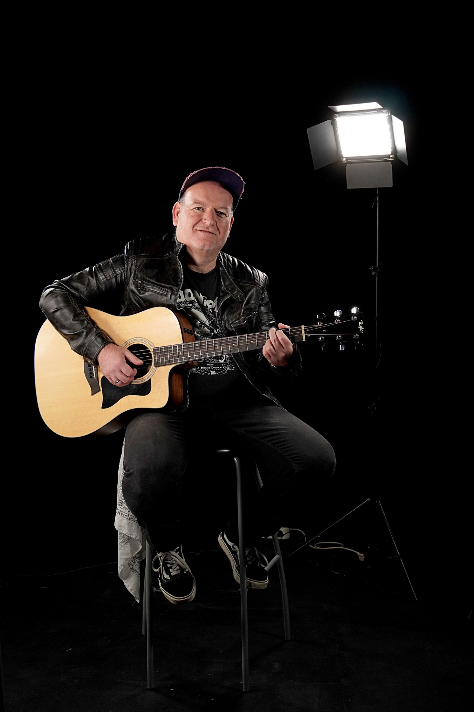
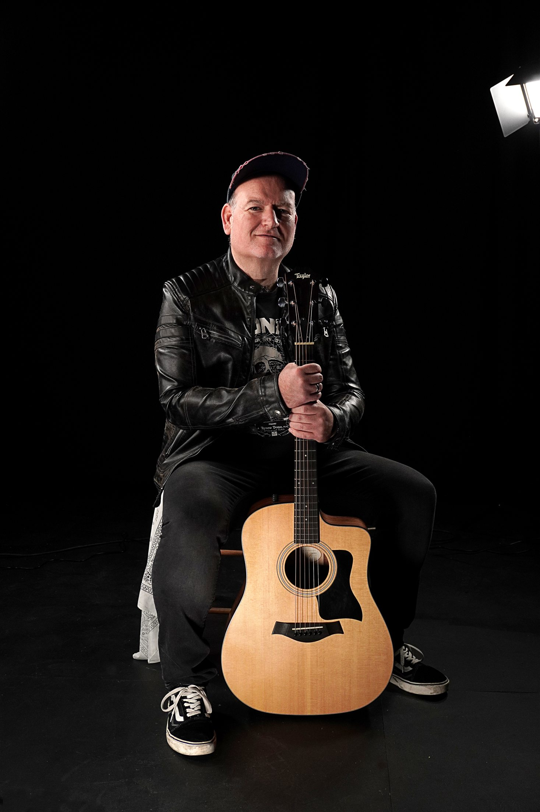

Clásicos con otra piel
Grandes canciones internacionales llevadas a voz y guitarra con un sonido cercano y personal.
Cantante · Guitarrista · Directo
Los grandes himnos de los 80 y 90 en un acústico de rock cercano para eventos en Málaga, con voz, guitarra y canciones para disfrutar y cantar juntos.

El artista
Julio Mérida lleva la esencia de los años 80 y 90 a escenarios y eventos de Málaga con un formato acústico cálido y directo. Su voz y su guitarra recuperan clásicos internacionales, rock y canciones en español que marcaron una época.
Una propuesta de música en directo con voz y guitarra, sin sesiones de DJ, que se adapta a bares, salas, terrazas, celebraciones, eventos privados y encuentros de empresa, conectando con el público desde la primera canción.
“Canciones de siempre, voz y guitarra, sin distancia entre el artista y el público.”
Repertorio acústico
Clásicos internacionales, himnos en español y versiones acústicas adaptadas a cada público y cada momento.
Grandes canciones internacionales llevadas a voz y guitarra con un sonido cercano y personal.
Temas como “Sufre Mamón”, “Zapatillas” y “Mi gran noche”, listos para cantar juntos.
Un repertorio flexible y una conexión con el público que hace diferente cada actuación.
Música en Málaga
El Trotamúsico ofrece actuaciones de cantante y guitarrista en directo en Málaga para celebraciones, locales, fiestas privadas y eventos corporativos. Es un espectáculo acústico en vivo, no un servicio de DJ.
Voz y guitarra con un repertorio flexible de clásicos nacionales e internacionales para crear un ambiente cercano.
Himnos y canciones reconocibles para un público que quiere recordar, cantar y participar durante el concierto.
Una alternativa personal a los grupos de música convencionales para bodas, empresas, terrazas, salas y celebraciones en Málaga.
Media
La cercanía de la voz y la guitarra, junto a otros formatos disponibles para cada ocasión.


Conferencias
Músico, productor, presentador de eventos y motivador de equipos. Julio ayuda a empresas a reconectar, convertir los retos en oportunidades y descubrir cómo la música y la creatividad pueden transformar su entorno.
Testimonios
“El Trotamúsico nos transportó a los 80 con su energía y talento. ¡Fue como revivir nuestra juventud!”María G. · Fan en Málaga
“Nunca había visto a un artista conectar tanto con el público. Todos cantamos y bailamos sin parar.”Juan P. · Organizador de eventos
“Sus versiones en español son increíbles. Un verdadero viaje en el tiempo.”Laura R. · Crítica musical
Contacto y contratación
Cuéntame la fecha, el lugar y el tipo de evento. Te responderé con la mejor propuesta para tu público.